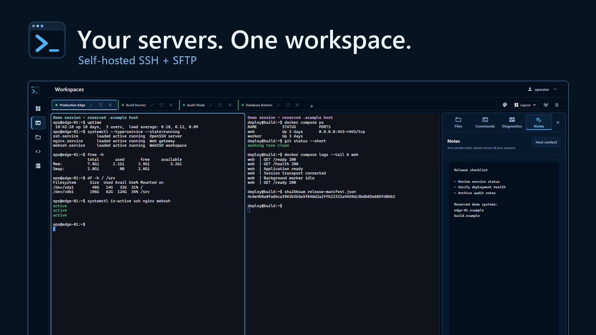

The full WebSSH tour
See the workspace in action.
From your first connection to files, commands and the Docker quickstart. All in 4 minutes and 33 seconds.

Chapters and full transcript
Follow the tour at your own pace.
The hosts, files, terminal output and measurements are prepared examples. The Docker section explains the local setup. Chapter links open the corresponding moment on YouTube.
What is WebSSH?
Ever find yourself switching between a terminal, a file browser, and a page of notes?
That's where WebSSH comes in. It brings those everyday tools into one workspace, running on your own server.
You install it on a machine you control. Your browser talks to that instance, and that instance connects to your servers.
Saved hosts and SSH routes
Let's start with Overview.
Give a saved connection a useful name, and you don't have to remember its address every time.
Looking for production? Type it into search, or pick a group. Recent connections also make it easy to get back to a machine you were just using.
Switch to the route view, and you can see how your saved connections fit together. Here, a few destinations go through a jump host.
Quick Connect, keys and jump hosts
Need a connection you haven't saved yet? Open Quick Connect.
Enter the host, port, and remote username. Nothing surprising here.
You can use a password or a saved key. We'll pick the operations key for this example.
If the destination sits behind a jump host, choose that in the advanced settings. The extra options are there when you need them.
Before you connect, compare the host's fingerprint with a trusted source. Check that you're reaching the right machine.
Split terminals and search
Now for the part you'll probably spend most of your time in: the terminal workspace.
Each connection gets a tab. Let's put two sessions side by side, with the edge server on the left and the build runner on the right.
Looking for a particular line? Open terminal search and type what you're looking for. Here, we're finding the web container.
And if you need more room, switch to four panes. Now all four sessions are visible together.
SFTP file preview and editing
Let's open Files. You get secure remote file access, right alongside the terminal workflow.
The two panes have separate sources and paths. That makes it easy to keep an eye on where something is going.
Pick a text file, like these deployment notes.
You can preview it here, then switch into edit mode. No need to download it just to change a line.
We'll add one item to the checklist. Notice the unsaved marker: the edit hasn't been written back yet.
Back in the file workspace, the transfer queue keeps progress and status visible when you're moving several files.
Reusable command sets
We all have commands we run over and over. This is where the command library helps.
Command sets take that one step further: several commands, arranged into a reusable sequence.
This baseline check already includes uptime and service status. Let's open it and have a look.
We'll find the disk-usage command and add it as the third step. There's the updated order.
Before running a set, check the commands and the target session.
Notes and Linux diagnostics
Use the notes as a private scratchpad. A release checklist, a reminder, whatever helps you pick up where you left off. They're shared across your own sessions.
Open diagnostics to check resource usage and inspect services on a compatible Linux host. These are sample measurements.
The details you can see depend on the remote system and your account's permissions.
Passkeys and account recovery
Depending on your setup, you can enable passkeys, an authenticator app, or an external identity provider.
Set up recovery while you can still sign in. It's much nicer to have that ready before you need it.
Docker quickstart
Ready to have a look yourself? Head to getwebssh dot com and open the Docker quickstart.
It uses the published container image and a persistent volume for your data.
The example keeps the web port on your own computer. That's a useful way to explore without opening it to the whole network.
Start the container, open localhost on port five thousand, and create the first administrator on a fresh instance.
For internet access, follow the production guide. It covers encrypted web access, allowed origins, secure cookies, and the proxy and network settings.
Project links and next steps
Found something useful, or something you'd like to improve? Come share it on GitHub.
And if you enjoyed the walkthrough, subscribe for more practical tools for your own infrastructure. Thanks for watching.
Music credits
“Chill Wave” by Kevin MacLeod (incompetech.com), licensed under Creative Commons Attribution 4.0 International. Edited, looped, level-adjusted and mixed under narration; fades applied.
Make it part of your setup.
Explore the features or choose a deployment for your network.